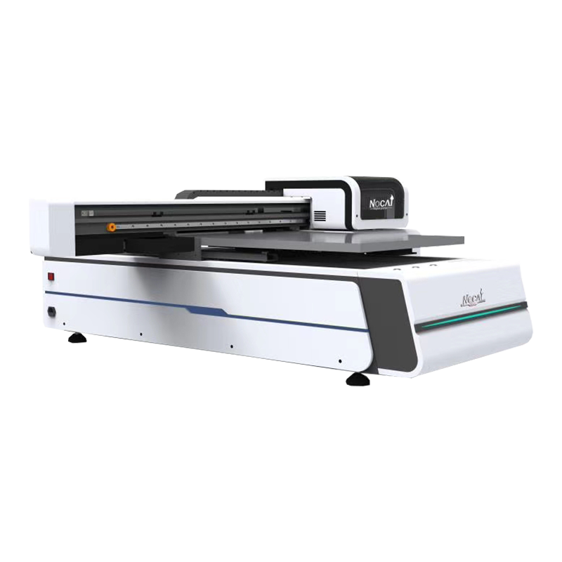

3D列印機：3D 列印機是一種創新的製造技術，它利用連續的添加方式（通常是層層堆疊）來製造物品。這些機器能夠讀取電腦輸入的三維模型，並使用不同種類的材料（例如塑料、金屬或生物材料）進行打印，逐層建構物品。3D 列印技術在各種領域中被廣泛應用，包括製造、醫療、建築和教育等。

UV直噴機：UV 直噴機是一種特殊類型的印刷機，它使用紫外線光固化墨水，這意味著它可以在印刷時立即將墨水固化在印刷物的表面，而不需要等待乾燥時間。這種技術使得印刷速度更快，並能夠在各種不同的表面上進行印刷，包括玻璃、金屬、塑料等。UV 直噴技術被廣泛應用於廣告、標誌、標籤印刷和產品包裝等領域。
雷切機：雷切機是一種利用雷射技術進行切割、雕刻和標記的設備。這種機器通常使用高能量雷射光束進行精確的切割或雕刻，在各種不同的材料上，如木材、紙張、塑料、皮革和金屬等。雷切技術能夠製造高精度的產品，並廣泛應用於工業生產、藝術製作、設計和製造原型等領域。